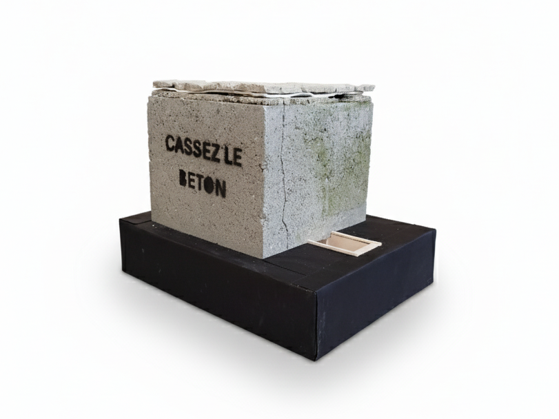
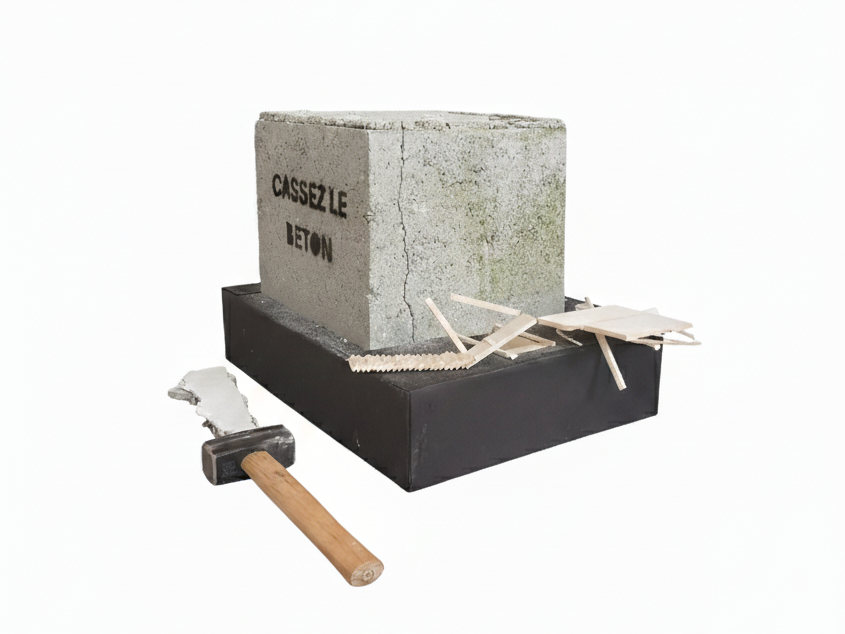
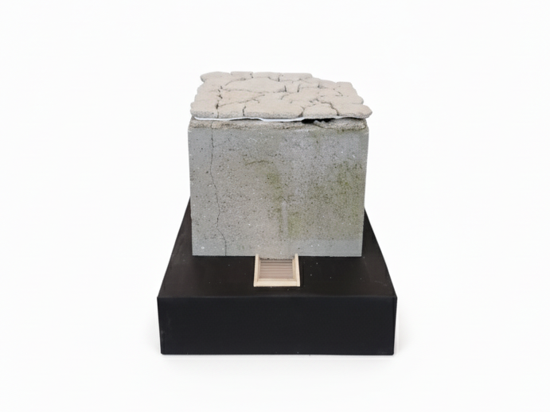
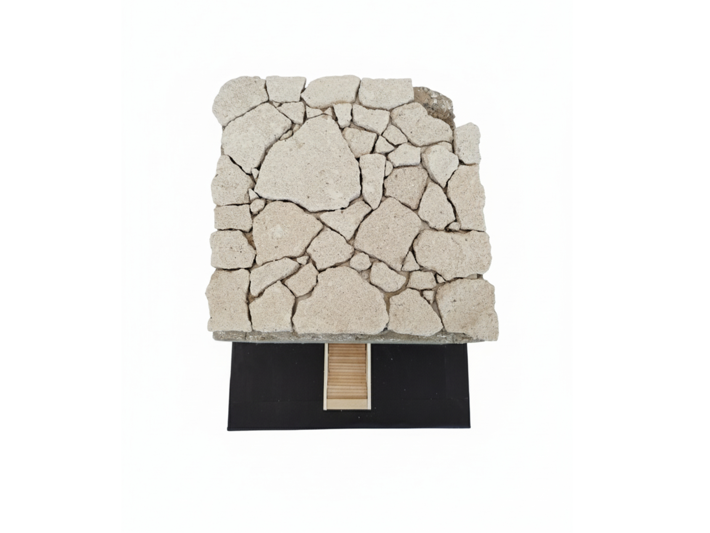
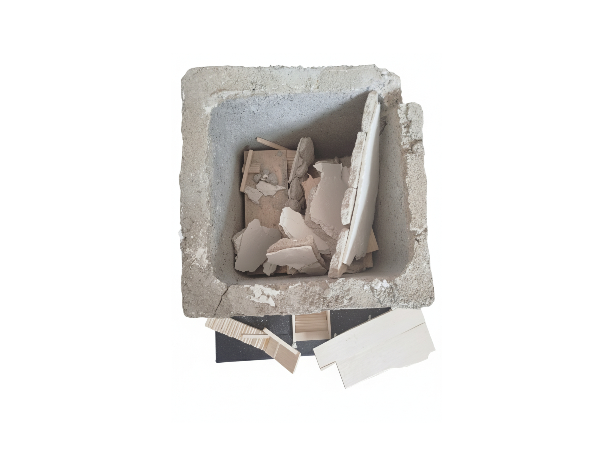
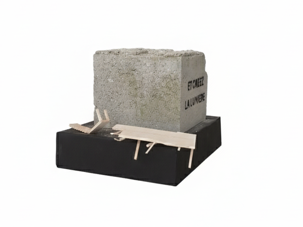
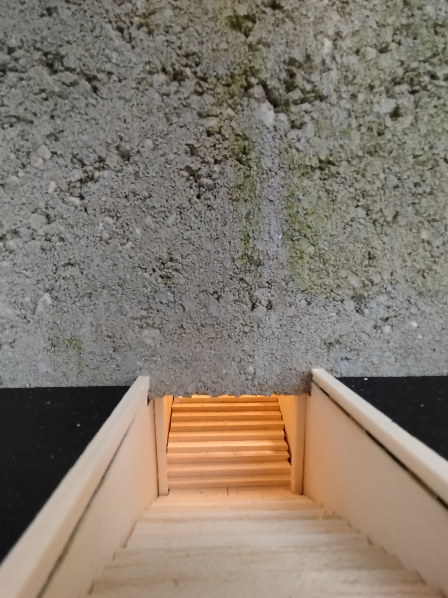
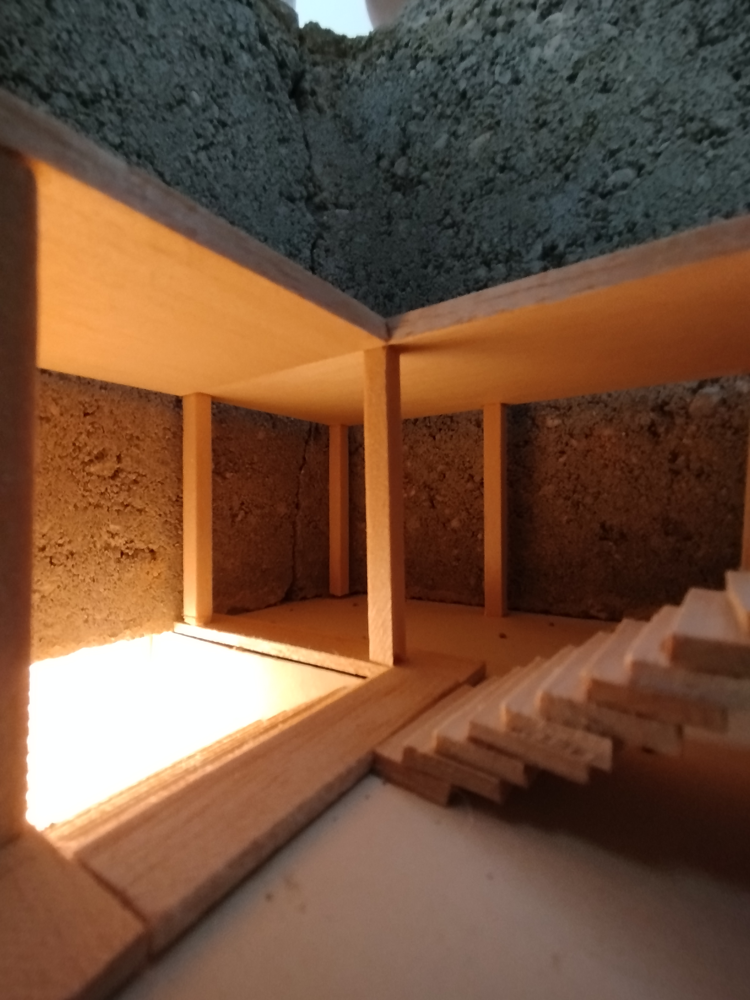
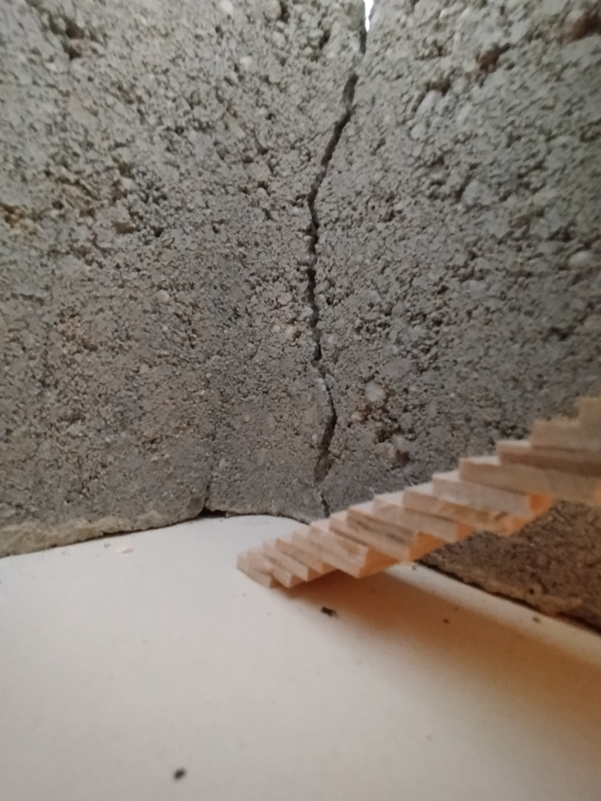
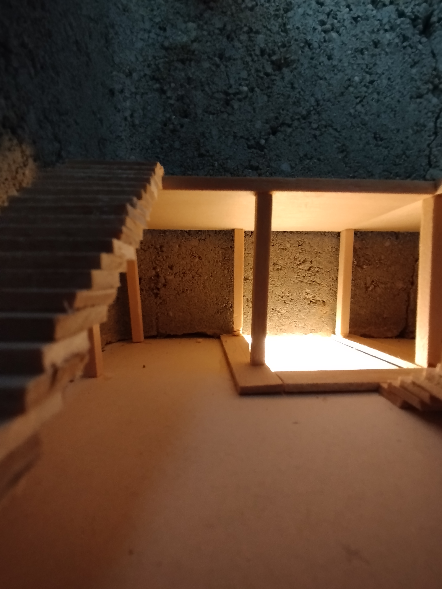

Cassez Le Béton
Projet architectural – ENSAL


Contexte : Le Manifeste Muet
Ce projet de première année, autour des pavillons éphémères des Galeries Serpentine à Londres, était un exercice de "rendu muet" : la maquette devait être autonome et porter son message sans défense orale. J'ai choisi d'utiliser cette contrainte pour créer un pavillon hautement symbolique et performatif, remettant en question l'essence même de l'architecture moderne.
Parti Pris Conceptuel : Dualité et Critique
Le Contraste Matériel
- L'Extérieur Brutaliste : J'ai opté pour un cube en béton préfabriqué (représenté par un regard en béton), dont la surface présente volontairement des signes d'usure, de mousse, de craquelures et de fissures. Ces traces servent à dénoncer l'impact écologique du béton et sa durée de vie limitée. Je cherchais à la fois à rendre hommage au brutalisme de maîtres comme Tadao Ando et à reproduire la délicatesse avec laquelle il utilise le matériau et la lumière.
- L'Intérieur Léger : Le contraste est total à l'intérieur. Le pavillon abrite une construction légère en ossature bois, symbolisant la durabilité, la chaleur, et une alternative viable au monolithisme extérieur.
L'Acte de Censure et de Révélation
L'intervention critique a été rendue explicite par deux inscriptions au graffiti sur la maquette : « CASSEZ LE BÉTON » et « ET CRÉEZ LA LUMIÈRE ». Lors de la présentation, un marteau était délibérément posé sur le socle, incitant le jury à suivre ces instructions.
La Double Signification du Projet
L'acte de destruction forcée révèle une double lecture de l'œuvre :
- Critique Architecturale et Écologique : La destruction du cube de béton révèle la fragilité du matériau et porte un message critique contre l'utilisation massive et non durable du béton dans la construction moderne.
- Réflexion sur la Destruction : L'ouverture violente de la maquette renvoie inévitablement aux scènes de destruction et de violence observées dans des zones de conflit actuelles (comme en Ukraine ou à Gaza). Le projet devient ainsi un mémorial symbolique, alliant la critique matérielle à une pensée sur la violence et la reconstruction nécessaire.
Images avant et après la destruction







